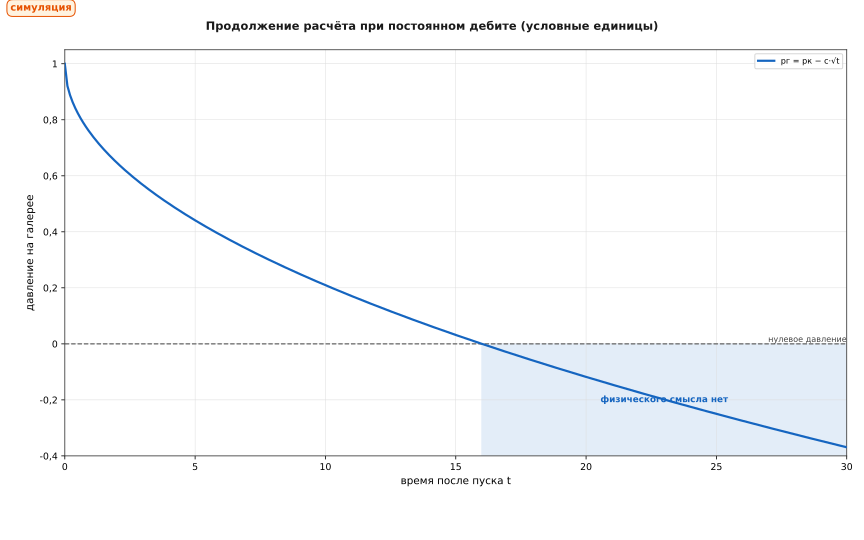

Путь › Как управление галереей меняет давление и отбор › Шаг 30 из 60
Когда постоянный дебит невозможен
В книге: «Прямолинейно-параллельный фильтрационный поток упругой жидкости» стр. 488
Опирается на: шаг 29 «Дальняя граница даёт давление галереи» (предпосылка), шаг 24 «Пуск галереи с постоянным дебитом» (опровергает заблуждение)
Суть
При больших временах формула требует отрицательного давления на галерее — это физически невозможно.
Значит, условие постоянного дебита слишком жёсткое; на деле у галереи возникнет кавитация.
Пороговая идея. Математически допустимое продолжение кривой может описывать физически нереализуемый режим. модель
Разбор источника
Определите, где наблюдение, вывод или допущение. Раскройте утверждение, чтобы свериться с ответом и цитатой.
При больших временах решение теряет физический смысл.
Вывод · стр. 488
«Нетрудно видеть, что решение (23.39) при очень больших значениях времени теряет физический смысл.»
Математическое продолжение расчёта даёт времена с отрицательным давлением на галерее.
Вывод · стр. 488
«В самом деле, так как процесс во времени не ограничен, то можно указать такие значения $t$, при которых $p_{\mathrm{r}}(t) < 0$.»
Предписание постоянной скорости отбора слишком жёсткое: при больших временах его поддержание потребовало бы отрицательного давления.
Вывод · стр. 488
«Полученный результат означает, что принятое граничное условие – задание $w(0, t) = \text{const} = w_1$ является слишком «жестким», для его реализации требуются отрицательные давления при больших временах $t$.»
В действительности отрицательные давления не возникнут.
Вывод · стр. 488
«Реально эти давления возникать не будут – возникнет кавитация вблизи галереи.»
Вместо отрицательного давления вблизи галереи возникнет кавитация.
Вывод · стр. 488
«Реально эти давления возникать не будут – возникнет кавитация вблизи галереи.»
Как это работает
Что показывает формула
По выводу автора, при больших временах решение теряет физический смысл. стр. 488
«Нетрудно видеть, что решение (23.39) при очень больших значениях времени теряет физический смысл.»

Если продолжать расчёт, наступают времена с отрицательным давлением на галерее. стр. 488
«В самом деле, так как процесс во времени не ограничен, то можно указать такие значения $t$, при которых $p_{\mathrm{r}}(t) < 0$.»
Значит, предписание постоянной скорости отбора слишком жёсткое. Чтобы его выдержать, понадобилось бы отрицательное давление. стр. 488
«Полученный результат означает, что принятое граничное условие – задание $w(0, t) = \text{const} = w_1$ является слишком «жестким», для его реализации требуются отрицательные давления при больших временах $t$.»
Что будет на деле
В действительности отрицательные давления не возникнут. стр. 488
«Реально эти давления возникать не будут – возникнет кавитация вблизи галереи.»
Вместо этого вблизи галереи возникнет кавитация — образование полостей в жидкости при падении давления. стр. 488
«Реально эти давления возникать не будут – возникнет кавитация вблизи галереи.»
Отрицательное расчётное давление доказывает, что далёкая экстраполяция непригодна. Но это не измеренный порог начала кавитации. стр. 488
Частая ошибка модель
Ошибка: Постоянный дебит можно поддерживать сколь угодно долго, если формула выдаёт результат.
На самом деле: При больших временах формулы потребовали бы отрицательного давления, но физически автор ожидает кавитацию у галереи. стр. 488
Что это значит для данных
Экстраполяцию давления при постоянном дебите нельзя принимать за прогноз после потери физического смысла.
- Вход
- Дебит и расчётный ряд давления на галерее.
- Выход
- Флаг выхода режима за область применимости.
- Где ломается
- При больших временах давление, нужное для удержания заданного дебита, становится отрицательным.
Где здесь ручной труд специалиста
- Входные данные
- Дебит и расчётный ряд давления на галерее.
- Ручные шаги
- Отмечать расчётные точки, в которых условие становится неосуществимым.
- Точки суждения
- Решить, где прекращать экстраполяцию и пересматривать постановку.
- Время
- Автоматически отметить нарушение быстро; для выбора другого режима нужна предметная проверка.
- Типичные ошибки
- Продолжать прогон модели с отрицательным давлением либо механически обрезать ряд до нуля.
Аналогия модель
Нефизическое давление похоже на нарушение инварианта в проверке результата модели.
Где аналогия перестаёт работать: Это не просто плохая запись, которую можно исправить обнулением: меняется сам физический режим.
Глубже
Не использовать нуль как рабочий порог модель
Отрицательное расчётное давление доказывает непригодность далёкой экстраполяции, но само по себе не задаёт измеренный порог начала кавитации.
Новые понятия
- Галерея (gallery)
- Линейная выработка, через которую в этой задаче отбирают жидкость из пласта. модель
- Дебит (volumetric flow rate)
- Объём жидкости, отбираемый за единицу времени. модель
- Скорость фильтрации (Darcy velocity)
- Отношение объёмного расхода к полной площади поперечного сечения среды. модель
- Кавитация (cavitation)
- Образование в жидкости полостей при падении давления. модель
- Граничное условие (boundary condition)
- Ограничение, заданное на границе пространственной области задачи. модель
Проверь себя
Заполните пропуск.
Вместо отрицательного давления вблизи галереи возникнет .
Верный ответ: Вместо отрицательного давления вблизи галереи возникнет [кавитация].
Автор прямо пишет о кавитации у галереи. Где это в тексте (стр. 488) →
Верный ответ: Постоянный дебит потребовал бы отрицательного давления на галерее
Предписание постоянной скорости слишком жёсткое. Где это в тексте (стр. 488) →
Источник
Все утверждения шага с дословной цитатой автора и страницей книги (по PDF).
При больших временах решение теряет физический смысл. вывод
«Нетрудно видеть, что решение (23.39) при очень больших значениях времени теряет физический смысл.»
Математическое продолжение расчёта даёт времена с отрицательным давлением на галерее. вывод
«В самом деле, так как процесс во времени не ограничен, то можно указать такие значения $t$, при которых $p_{\mathrm{r}}(t) < 0$.»
Предписание постоянной скорости отбора слишком жёсткое: при больших временах его поддержание потребовало бы отрицательного давления. вывод
«Полученный результат означает, что принятое граничное условие – задание $w(0, t) = \text{const} = w_1$ является слишком «жестким», для его реализации требуются отрицательные давления при больших временах $t$.»
В действительности отрицательные давления не возникнут. вывод
«Реально эти давления возникать не будут – возникнет кавитация вблизи галереи.»
Вместо отрицательного давления вблизи галереи возникнет кавитация. вывод
«Реально эти давления возникать не будут – возникнет кавитация вблизи галереи.»